Prelude
This post will give a basic tutorial on how to using Docker. The topics that will be explained are:
-
What is Docker
-
Docker Architecture
-
Start using Docker (Guide to using basic commands)
-
Create Image using Dockerfile
-
Handle Image using Environment Variable
-
Integrate Container Networking
-
Manage Data in Docker
-
Docker Compose
-
Docker Tools
-
Docker Cheat-sheet
This post will be pretty long, and I hope you will enjoy it, and feel free to give feedback to help me improve this tutorial.
Thanks, and enjoy it!
What Is Docker?
Docker is a configuration management tool that is used to automate the deployment of software in lightweight containers. These containers help applications to work efficiently in different environments. By using Docker, developers can quickly build, pack, ship, and run applications as lightweight, portable, self-sufficient containers and running virtually anywhere.¹ Containers allow developers to package an application with its dependencies and deploy it as a single unit. By providing prebuilt and self-sustaining application containers, developers can focus on the application code and use it without worrying about the underlying operating system or deployment system.²
Docker Architecture
The core concepts of Docker are images and containers. A Docker image contains everything that is needed to run your software: the code, a runtime (for example, Java Virtual Machine (JVM), drivers, tools, scripts, libraries, deployments, and more. A Docker container is a running instance of a Docker image. However, unlike in traditional virtualization with a type 1 or type 2 hypervisor, a Docker container runs on the host operating system’s kernel. Within a Docker Image, there is no separate operating system, as illustrated below.³
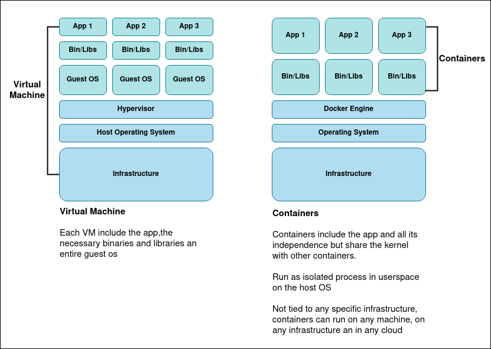 Docker Architecture
Every Docker container has its own file system, network stack (and therefore its own IP address), process space, and defined resource limitations for CPU and memory. Since a Docker container does not have to boot an operating system, it starts up instantly. Docker is about isolation, i.e., separating the resources of a host operating system, as opposed to virtualization, i.e., providing a guest operating system on top of the host operating system.
Image
Image is a read-only file with a bunch of instructions. When these instructions are executed, it creates a Docker container. We can say that an Image is a template to create a container.
Container
A container is a software package that has all the dependencies required to run an application. When running a container, it uses an isolated filesystem.
Container Registry
Docker Container Registry is where we put Docker Image remotely before deploying it to the server. In another way, it is a standard way to store and distribute Docker images. It also helps improve access control and security of docker images stored in its repository. While managing the distribution of Images, it can also integrate with application development workflow. Developers can set up their own Container Registry because it is an open-source-based repository under the permissive Apache license. You can also use a hosted Container Service such as Docker Hub or Azure Container Registry, etc.
Installing a Docker
I won’t cover how to install Docker. There are many tutorials on how to install Docker into your machine. For me, I prefer using the official document. You can see the instruction here.
Start Using Docker
After you install the Docker, let’s get into it!
Pull Image from Registry
Check the image on our local
$ docker images
Image list
if you newly install Docker, you won’t see anything on the list. You will just see the header result, REPOSITORY, TAG, IMAGE ID, CREATED, **SIZE**.
Pull the image
To pull an image you can use the command:
$ docker pull <image-name>
or for a specific image version
$ docker pull <image-name>:<tag-name>
For this example, we will use MongoDB image. You can check it here. If you open the link, you can see on the right, there is a command that tells you how to pull the image.
 Docker hub
Docker hub
On the Tags menu, you can see the available version of the image
Docker hub tags menu
Copy the image pull command, and run it on your terminal. You will see that the image is being pulled from the registry to our local machine.
Pulling image
If we do not specify the tag name, it will automatically pull the latest image on the registry. After Image pulling is finished, we can recheck the images list, you will see mongo on the list
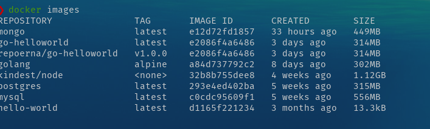
Create Container
Check running container.
To check the running container, you can use
$ docker container ls
It will show only the** **running container, but if you have some container that stopped, it won’t show on the list. To see all containers that we have, we can use
$ docker container ls --all
You can use --all or **-a**. It will show all the containers you have on your local machine. You can see on the image there are some containers running, and some containers stopped.
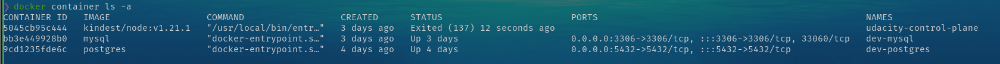
You can see on the image there are some containers running, and some containers stopped.
Creating container
There are many ways to create a container. These commands are:
$ docker container create <image-name>
to create a container with a specific image tag
$ docker container create <image-name>:<tag>
to create a container with a predefined name, we can use --name argument on our command
$ docker container create --name <some-container-name> <image-name>:<tag>
For the example, let’s create a container for our pulled MongoDB image,
$ docker container create --name test-mongo mongo
let’s check it using our container,
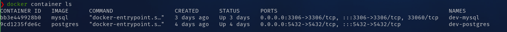
You can see that there is no test-mongo container. This happens because using the container create command just creates the container and not started it. You can try usingdocker contaner ls -a command to see the container.
You can also create multiple containers from the same image with one condition; the container name must be different because the container name is unique. If you create a container without specifying the name, Docker will generate a random name for the container.
Start Container
After we create the container, we can run it using the command
$ docker container start <container-name>
After we run the command, let’s check our container list,
As you can see, our test-mongo is already up and running. In our case, you can see. In our case, you can see PORTS section of test-mongo container, we can access the container by using port 27017.
Let’s try connecting to MongoDB. You can use a DB client that supports MongoDB connections like Robo3T, but I’m using Datagrip.
So, we can’t connect to our MongoDB. Why is this happening? Well, this is because PORTS the info that we see before is port on the container. The container’s behavior is that it will create an isolate the system, which means that we can’t access the system without exposing the port, so it can’t access the outside of the container.
Open Port
So, how can we expose the container’s port? To achieve that, we should consider passing an argument -p or --port when we create the container, so the command will look like this
$ docker container create --name <container-name> -p <external-port>:<container-port> <image-name>:<tag>
Let’s try creating a new container
I will explain the command.
container-port i is a predefined port that already assigns when building the Image. If we were using the Image that we get from the docker registry, we could see the documentation of the Image for ports information. In this case, MongoDB using port 27017.
And in the external-port, I use port 8011. It means, when I’m using port 8011 outside the container (or on my local machine), every request that comes through the port 8011 will be forwarded to port 27017 inside the container.
Try to start the new container, and with this, we can access MongoDB.

Remove Container
To remove the container we use the command
$ docker container rm <container-name>
Let’s try to delete test-mongo container
An error will occur. This happens because Docker wants that we to stop the container before we remove it. There is two way to handle this,
- Stop the container using
$ docker container stop <image-name>
and then run the container remove command again
- Force delete the container by using an argument
--force
$ docker container rm <image-name> --force
Please ensure that you know what you are doing when using this command.
For this example, I will use option 2,
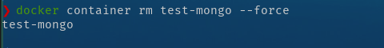
You can try to recheck the container list to ensure the container is already removed.
Remove Image
Same with removing the container, we can’t remove an image before all container that uses that Image is removed. To remove an image, you can use the command
$ docker image remove <imange-name>:<tag>
Let’s stop and remove the container, and then remove the mongo image.
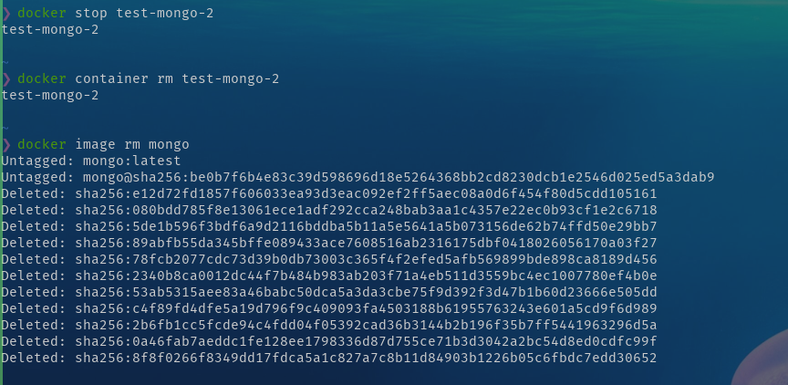
Docker Logs
We can see docker logs to help us debug our application inside the container. To do that, we can use the command
$ docker logs <container-name>
You can try to create some containers and check the container’s logs. This is an example of my Postgres container.
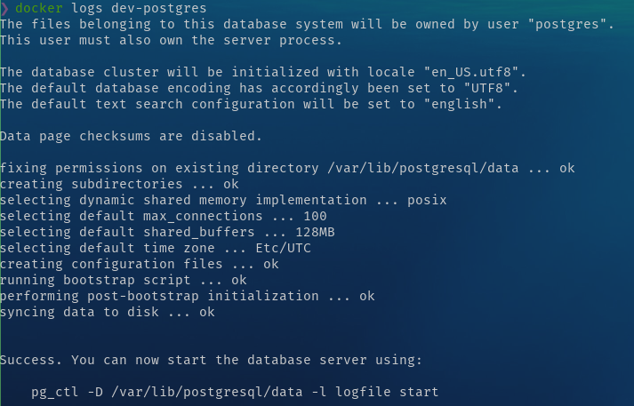
Getting through inside the container
Even though the container is isolated from the outside of the container, Docker has some commands that we can use to pass a command inside our container. We can use the command
$ docker exec <option> <container-name> <command>
you can see more about docker exec here
I will demonstrate using my postgre named dev-postgresto get into Postgres client inside the container.
You can see that I am running a command to show the database list inside the container -it means interactive (Keep STDIN open) and tty (Allocate a pseudo-TTY).
Create Image with Dockerfile
We already use Docker with the Image from the container registry, but how if we want to create an Image? Here comes the Dockerfile. Dockerfile is a simple text file that consists of instructions to build Docker images. Dockerfile consists of commands that guide you on how to build a specific Docker image.
For example, we need to prepare some application code to demonstrate how to build an application image. We will create 2 files, the application code, and the Dockerfile. For the application code, I will make a simple HTTP app using Go. You don’t need to have Go runtime on your computer because we will have our app inside the container then have Go runtime in it.
Prepare an app
package main
import (
"fmt"
"net/http"
)
func main() {
// * Handle Route "/"
http.HandleFunc("/", func(w http.ResponseWriter, r *http.Request) {
fmt.Fprintf(w, "<h1>Hello Docker!</h1>")
})
http.ListenAndServe(":8000", nil)
}
Create a Dockerfile
# BUILD IMAGE FROM EXISTING IMAGE
# Line with '#' will not executed
# 1. Call the image
# FROM <image name>:<tag>
# for the base we will use golang image version 1.15
FROM golang:1.15
# 2. Copy file that needed in this image
# COPY <source> <destination>
# we will put file main.go in /app/main.go inside the container
COPY main.go /app/main.go
# 3. Telling the image how to run the app
# CMD [<add command using array>]
CMD ["go", "run", "/app/main.go"] # same with "go run /app/main.go"
Build Image
we can use 3 way to build an image:
- simple way
docker build <path-to-dockerfile>
- add a name in our image
docker build --tag <app name> <path-to-dockerfile>
- add name and version number
docker build --tag <app name>:<version number> <path-to-dockerfile>
$ docker build --tag app-golang:1.0 .
building an image using Dockerfile can be done in various ways, depends on your needs, and many Dockerfile syntaxes are often used when creating an image, such as:
-
ENTRYPOINT
-
RUN
-
WORKDIR
-
ENV
read this docker documentation, get to know all the syntax, and see the best practice of using it.
Create our app container
Let’s try to create a container for our app and run it. Then we can check our app using the browser.
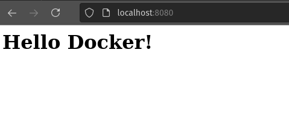
Upload Image to Registry
Preparation
- Login to your account at https://hub.docker.com/
- Create New repository for the image
Push image
We will use the docker command to push the image, docker push <repository name>:<tag>
If we try to insert the command, we will get an error: An image does not **exist locally ...**
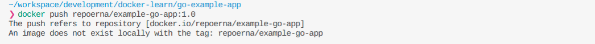
This will happen because we create an image with a name that is different from our repository name. Let’s check the Image in our local, using:
$ docker images

our local image is named app-golang but the docker registry wants repoerna/example-go-app.
To resolve this, we need to do create the image with different names by using
$ docker tag <local-image>:<tagname> <reponame>:<tagname>
check docker images in our local, we will see the new image created,
after that, we can push to the repository, by using the same command we used before
Oops! We still get an error, our request to push is denied. It is because, our local docker didn’t know, where to push the image.
We need to login, by using
$ docker login
input your account credential for the docker hub
after we logged in, let’s try to push again
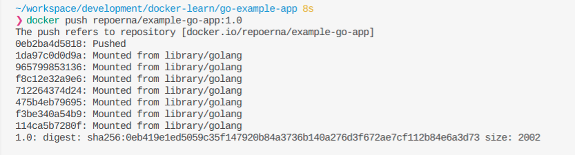
Alright! We success push our local image to the remote repository, lets check in the docker hub

For details about the docker repository, you can read the documentation
Handle Image with Environment Variable
An environment variable is a dynamic-named value that can affect the way running processes will behave on a computer. They are part of the environment in which a process runs. — Wikipedia
An environment variable is rarely used directly. It is usually used by a program to configure itself. In software development, some configurations for the program/ application are set by using an environment variable. If we want our program to change some configuration, we can achieve this by changing the environment variable without changing the code.
in Linux or macOS, you can see your OS environment variable using the command
$ printenv
if you using Windows, you can access the environment variable by open Control Panel > Advanced system settings > Environment Variable. You will see the Environment Variable window.
If we want to dockerize our program that needs an environment variable, we should add some commands before running the container. To give you an example, let’s update our program to handle some environment variables. We will add a new route to manage the environment variable.
package main
import (
"fmt"
"net/http"
"os"
)
func main() {
package main
import (
"fmt"
"net/http"
"os"
)
func main() {
// * this will set env variable MYNAME
// os.Setenv("MYNAME", "REPOERNA")
// * get env variable MYNAME
appPort := os.Getenv("APP_PORT")
port := fmt.Sprintf(":%s", appPort)
myName := os.Getenv("MYNAME")
txt := fmt.Sprintf("<h1>Hello, %s</h1>", myName) // <-- env var MYNAME will be used in this line
// * Handle Route "/"
http.HandleFunc("/", func(w http.ResponseWriter, r *http.Request) {
fmt.Fprintf(w, "<h1>Hello Docker!</h1>")
})
// * Handle route "/myname"
http.HandleFunc("/myname", func(w http.ResponseWriter, r *http.Request) {
fmt.Fprintf(w, txt)
})
http.ListenAndServe(port, nil) // <-- env var APP_PORT will be used in this line
}
Remember, in our program, we need two environment variables, APP_PORT and MYNAME. After updating our program, rebuild it without changing the Dockerfile.
$ docker build --tag app-golang:1.0 .
and then create a container using the image, and add -eto add an environment variable
$ docker container create --name golang-test-env -p 8080:8080 -e APP_PORT=8080 -e MYNAME=REPOERNA app-golang:1.0
after the container is created, let’s inspect the environment variable in it by using the command
$ docker container inspect golang-test-env
In the list, you will see in Env with APP_PORT and MYNAME. The value is the same as the command that we type before. For PATH, GOLANG_VERSION, GOPATH are automatically added, because we use golang in our Dockerfile.
So let’s run the container, to check our program is working
$ docker container start golang-test-env
if no error occurred, open in browser localhost:8080/myname, it will show the MYNAME environment variable value.
- Note: when using a Dockerfile to create an image, you can specify the environment variable inside your Dockerfile. Please see the official documentation on how to implement that.
Integrate Container Networking
In this section, we will talk about connecting containers to another container. Let say we have a web server that needs to communicate with Postgres for its database and Redis for its caching or session storage.
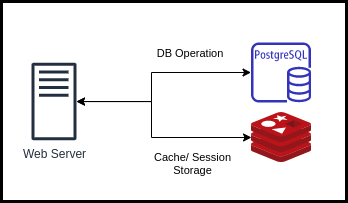
So, we will prepare 3 containers, one for the app, one for Postgres, and one for Redis. Before that, let’s prepare our app. We will be using our previous app and add some code to connect with Postgres and Redis.
Update our app
main.go
We will add some database connections to our app.
Package main
import (
"database/sql"
"fmt"
"net/http"
"os"
"github.com/go-redis/redis"
_ "github.com/lib/pq"
)
func main() {
dbHost := os.Getenv("DB_HOST")
dbPort := 5432
dbUser := "postgres"
dbPass := "Secure123"
dbName := "docker-demo"
redisHost := os.Getenv("REDIS_HOST")
redisAddr := fmt.Sprintf("%s:6379", redisHost)
redisPass := "" //no password set
redisDB := 0 //default db
// * setup postgre connection
dsn := fmt.Sprintf("host=%s port=%d user=%s "+
"password=%s dbname=%s sslmode=disable",
dbHost, dbPort, dbUser, dbPass, dbName)
db, err := sql.Open(
"postgres",
dsn,
)
if err != nil {
fmt.Println(err)
}
// * Ping for test the connection
if err = db.Ping(); err != nil {
fmt.Println(err)
} else {
fmt.Println("DB Postgres Connected !")
}
// * setup redis connection
rdb := redis.NewClient(&redis.Options{
Addr: redisAddr,
Password: redisPass,
DB: redisDB,
})
// * Ping for test the connection
pong, err := rdb.Ping().Result()
if err != nil {
fmt.Println(err)
} else {
fmt.Println(pong)
fmt.Println("Redis Connected !")
}
// * get env variable MYshNAME
appPort := os.Getenv("APP_PORT")
// handle for default port
if appPort == "" {
appPort = "8080"
}
port := fmt.Sprintf(":%s", appPort)
// myName := os.Getenv("MYNAME")
// txt := fmt.Sprintf("<h1>Hello, %s</h1>", myName)
// * Handle Route "/"
http.HandleFunc("/", func(w http.ResponseWriter, r *http.Request) {
fmt.Fprintf(w, "<h1>Hello Docker!</h1>")
})
// * Handle route "/myname"
// http.HandleFunc("/myname", func(w http.ResponseWriter, r *http.Request) {
// fmt.Fprintf(w, txt)
// })
http.ListenAndServe(port, nil)
}
For Postgres and Redis hostname, we will use an environment variable, and because we are using Redis, we need to use modules in our go app. Therefore we need to update our Dockerfile to handle go modules.
Dockerfile
FROM golang:1.15
ENV GO111MODULE=on
WORKDIR /app
RUN go mod init
COPY . .
RUN CGO_ENABLED=0 GOOS=linux GOARCH=amd64 go build
EXPOSE 8080
CMD ["go", "run", "/app/main.go"]
After the app is ready, we will continue preparing the container, and don’t forget to clean up the previous container
Create Container
- Rebuild our golang app image
$ docker build — tag app-golang:1.0 .
- Create golang app container
$ docker container create — name golang-docker -e REDIS_HOST=localhost -e DB_HOST=localhost -p 8080:8080 app-golang:1.0
- Create Postgres container
$ docker container create --name postgres-docker -p 5432:5432 -e POSTGRES_DB=docker-demo -e POSTGRES_PASSWORD=mysecretpassword postgres
- Create Redis container
$ docker container create --name redis-docker -p 6379:6379 redis
let’s see our created containers
Start Containers
start all 3 containers
$ docker container start redis-docker postgres-docker golang-docker
check our app container
$ docker container logs golang-docker
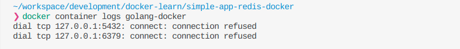
As I expected, an error will happen because we were trying to connect to localhost. We can’t connect to localhost because Redis and Postgres are in a different containers. We need to use the container name as the hostname. So, let’s delete golang-dockercontainer and re-create it.
$ docker container create --name golang-docker -e REDIS_HOST=redis-docker -e DB_HOST=postgres-docker -p 8080:8080 app-golang:1.0
Start the container, and check logs again.

We still can’t connect to Redis and Postgres. What happens here? As you can see, there is an error occur in our app. This will occurred because our program still can’t find Redis and Postgres. Before using localhost or 127.0.0.1 as the host, localhost refers to the hostname in the current computer or system.
As you know, when creating a container, the system inside it will be isolated from another container. Even if we want the container to connect to our laptop or computer, we need to expose the container port and mapping it to our computer port. But, after we changed the hostname to the container name, errors still occurred. So how to make containers communicate with each other?
Setup Container Network
To achieve that, we need to use docker network, which will help us connecting containers
$ docker network --help
- Create docker network
$ docker network create example-network
we can check our created network by using
$ docker network ls
- Set container network
$ docker network connect example-network golang-docker
$ docker network connect example-network redis-docker
$ docker network connect example-network postgres-docker
After we connect the containers to the network, let’s inspect our container
$ docker container inspect golang-docker
You can see in “Networks”, there is example-network, that we created before.
Let’s restart our golang-app container, and check the logs
$ docker container restart golang-docker
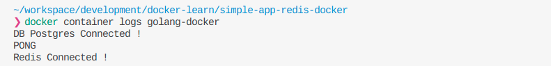
Finally, it’s connected! Congratulations to us!
Manage Data in Docker
When creating an application, it is best to make it stateless. It means no data are saved or the data stored somewhere else. However, some applications need to be stateful, for example, databases. How do we run a stateful application? How can we save the data so when we delete a container, the data will still remain?
Actually, you can read the documentation about that here
There are many ways to manage data in Docker. Usually, I will use bind mounts, but we will try to use volume this time.
In this example, we will try to create a MongoDB container. To manage data, first, we must know where is application save its data. If you use mongo image from docker hub, we can see in the description at subtitle Where to store data, from there we can see where is mongo data reside, it’s in /data/db.
So, let’s start…
- Pull image
$ docker pull mongo
- Create new volume
$ docker create volume mongo-test
The volume will be used in our container. This is where data will be saved. You can check where is volume stored in your computer by using the command:
$ docker volume inspect <volume-name>

- Create container
$ docker container create --name mongo-docker -v mongo-test:/data/db -p 27017:27017
In this command we use -v <docker_volume>:<data location in application> to create volume binding between docker and our computer.
- Start container
$ docker container start mongo-docker
- Open mongo DB using mongo client, here I’m using Studio 3T
By default, there are 3 DB like above in the newly created MongoDB. Let’s create a new DB and add new data in there
- Create a new DB and insert some data
Here, I already create new DB named test_db, a collection name test_collection, and inside that collection there 1 document
- Stop and delete the container
$ docker container stop mongo-docker
$ docker container rm mongo-docker
-
Create and start the container again using the same command in steps 3 and 4
-
Check DB again using Mongo client

You will see, that your data is still there. Congratulation!
That is one method of how to manage data in docker, there is still many ways to manage data in docker. Please be sure to read the documentation. In there you will know what method to use and how to use it for your needs.
Docker Compose
We already learn to integrate our containers. In the previous example, we use 3 containers, but what if our application or system needs more than that? Doing it manually every step will be a problem, right? So, Docker Compose will help us automate that process.
Basically, there are 3 steps to use Docker Compose, these steps are:
-
Define your app’s environment with a
Dockerfileso it can be reproduced anywhere. -
Define the services that make up your app in
docker-compose.ymlto be run together in an isolated environment. -
Run
docker-compose upand Compose starts and runs your entire app.
In step 1, we already learn how to create Dockerfile so we will focus on step 2, how to create docker-compose.yml file, and step 3, how to run it.
Let’s create our**docker-compose.yml** ,
version: "3.9" # optional since v1.27.0
services:
db:
container_name: postgres-comose
image: postgres
ports:
- 5432:5432
networks:
- compose-network
environment:
- POSTGRES_DB=docker-demo
- POSTGRES_PASSWORD=mysecretpassword
cache:
container_name: redis-compose
image: redis
ports:
- 6379:6379
networks:
- compose-network
app:
container_name: golang-compose
# image: app-golang:1.0
build:
context: .
dockerfile: Dockerfile
ports:
- 8080:8080
restart: unless-stopped
networks:
- compose-network
depends_on:
- db
- cache
environment:
- REDIS_HOST=redis-compose
- DB_HOST=postgres-compose
- MYNAME=REPOERNA
networks:
compose-network:
name: new-example-network
*Note: in the app service environment, we use REDIS_HOST and DB_HOST using Redis and Postgres container name
Okay, I will explain what we write. At the root of the file, we have:
-
versiondefine Compose release. Each release has different features and parameters that we can use. You can read the compatibility matrix of each version here. If you omit theversionby default, it will use version 1. -
servicesdefined all services in our system. In our example, before we use Postgres, Redis, and golang app, those 3 services will be defined here. -
networkdefine network will be used, if you haven’t created the network, it will be automatically created, and you can create more than one network here.
Inside services, there is the service name; we have DB, cache, and app. On every service, we will define a parameter that will be used on each service. these parameters are:
-
container_namedefines name services container. -
imagedefine an image that will be used for creating the container. -
portdefine port binding to exposed the port inside a container with the environment outside. -
networksdefine a network that will be used by services. -
depends_ondefine other services that needed by app services. -
environmentdefine environment variable inside the container.
In app service, instead of using an image, we will use build to build the image, below build there is context that define the location of Dockerfle that will be used to build the image and dockerfile to define Dockerfile filename.
To run Docker Compose, we need to use some commands, you can check in your terminal by using
$ docker-compose
It will show you a list of commands and a short description of its function. You need to know how to use it properly. There are common commands that I frequently used:
docker-compose build
It will rebuild the image if you are using build instead of image in your docker-compose.yml, if your services using existing images, there will be an error occurred.
docker-compose up -d
It will create and start containers, it is best to use-d or daemon mode, to run the process in the background.
docker-compose down
it will stop and remove containers, networks, images, and volumes. Please beware if you using a database in your services, when you use this command, the data will also be removed.
So, let’s run the Docker Compose
- Rebuild the image
$ docker-compose build
this process will be the same with docker build
- Start services
$ docker-compose up -d
- Check our application
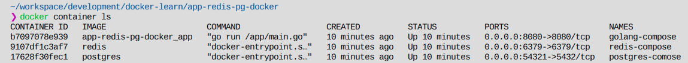
Our services are up! No error occurred.
- Clean Up
$ docker-compose down
Docker Tools — Kitematic
Docker tool is software that you can use to help you manage Docker using GUI. Docker has its own tools called Docker Desktop, but it is only for Windows and macOS. For Linux, I preferred using Kitematic because it also can run on Windows, macOS. It also has more features than Docker Desktop.
The features are:
-
Create, delete, start & stop a container
-
View containers logs
-
Managing volumes
-
Add environment variables
-
Command-Line Access
You can see the details on
You can see the details on Kitematic website or docker documentation.
Docker Cheat Sheet
Refrence
[1] What Is Dockerfile: Everything You Need to Know